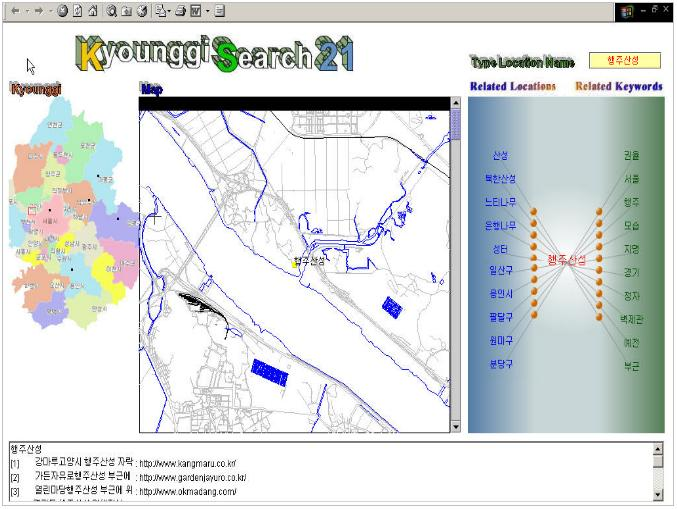

As mentioned in the previous section, we developed the KyotoSEARCH-I system for Kyoto city; it realizes geographic information retrieval through the integration of maps and concepts. To confirm that the system can be extended to other cities and different languages, we developed the KyonggiSearch21 system for the region around Seoul, Korea through the cooperation of the research group of Hankuk Aviation University, Korea (Leader: Prof. Yong Jin Kwon) (Fig. 1). These developments show the portability of our geographic information system.

Fig. 1 The user interface of KyonggiSearch21
Based on our joint research, we the developed KyotoSEARCH-II system to support a larger scale of information retrieval and enhanced user interfaces (Fig. 2). The extensions of the new system are as follows:
1.Range Query and spacial WWW indices
The conventional WWW information retrieval systems force the user to input keywords of location names to retrieve the information limited to specific areas. We have developed a more intuitive interface that enables the user to indicate the range on a map; this function is called Range Query. The proptotype system implements the Range Query and a function that generates spacial indices for the query. The function maps each WWW page onto a map based on location names and generates MBR (Minimum Bounding Rectangle). An R-Tree (an index for two dimensional data) can be used for MBR. It enables users to rapidly access WWW pages related to the indicated areas.
2.ConceptQUERY and query history
Our system provides two methods for indicating locations: input of location names and Range Query. When the user inputs keywords, they do not have to be related to locations. The system treats user queries as conceptual queries related to space (ConceptQUERY) and allows the generation of queries including location names of real space and keywords not related to location names. In addition to the function of selecting location names and other keywords provided by KyotoSEARCH-I and KyonggiSearch21, this system enables users to reuse past queries and answers from a query history. These extensions to the user interface improves the usability of the system.
Fig. 2 The user interface of KyotoSEARCH-II
Publications:
Yahiko Kambayashi, Ryong Lee, and Taro Tezuka. Generation of Location-Related Knowledge from Web Content. NSF-OntoWeb Invitational Workshop on DB-IS Research for Semantic Web and Enterprises, pp.40-50, 2002.
Ryong Lee, Yohsuke Inoue, Taro Tezuka, Naoharu Yamada, Hiroki Takakura and Yahiko Kambayashi. Kyoto SEACH: A Concept-based Geographic Web Search Engine. Proceedings of 2002 IRC International Conference on Internet Information Retrieval, pp.119-126, 2002.
Contact:
Taro Tezuka (tezuka at dl.kuis.kyoto-u.ac.jp)
Yusuke Yokota (yyokota at i.kyoto-u.ac.jp)
Dept. of Social Informatics, Kyoto University`